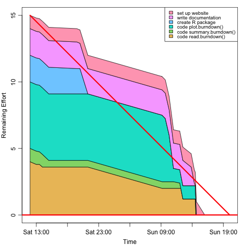

Sample use
library(burndown)
b <- read.burndown("file.dat") # like the one given below
plot(b)
Sample plot
Sample file input
Putting the content below into a file named file.dat and running
the R code given above yields the plot shown above.
Start, 2006-04-08T12:00
Deadline, 2006-04-09T20:00
Key, Description, Effort
1,code read.burndown(), 4
2,code summary.burndown(), 1
3,code plot.burndown(), 5
4,create R package, 2
5,write documentation, 2
6,set up website, 1
Key, Done, Time, Comment
1, 5, 2006-04-08T13:00
2, 5, 2006-04-08T13:30
1, 10, 2006-04-08T14:00
2, 50, 2006-04-08T15:00
4, 5, 2006-04-08T19:30
5, 5, 2006-04-08T20:00
4, 100, 2006-04-08T21:16
1, 50, 2006-04-09T09:10
3, 5, 2006-04-09T09:41
3, 30, 2006-04-09T10:18
3, 80, 2006-04-09T11:00
2, 60, 2006-04-09T12:00
2, 100, 2006-04-09T12:10
1, 70, 2006-04-09T12:30
5, 30, 2006-04-09T13:50
5, 90, 2006-04-09T14:20
5, 100, 2006-04-09T14:30
1, 100, 2006-04-09T14:35
6, 100, 2006-04-09T16:00
3, 100, 2006-04-09T14:40
Since burndown is not in the official R repository, you'll need
to install it yourself. Do that by typing the following in an R session.
library(devtools)
install_github("burndown", "dankelley", "master")
You'll need to first do
install.packages("devtools")
if you don't have that installed already.